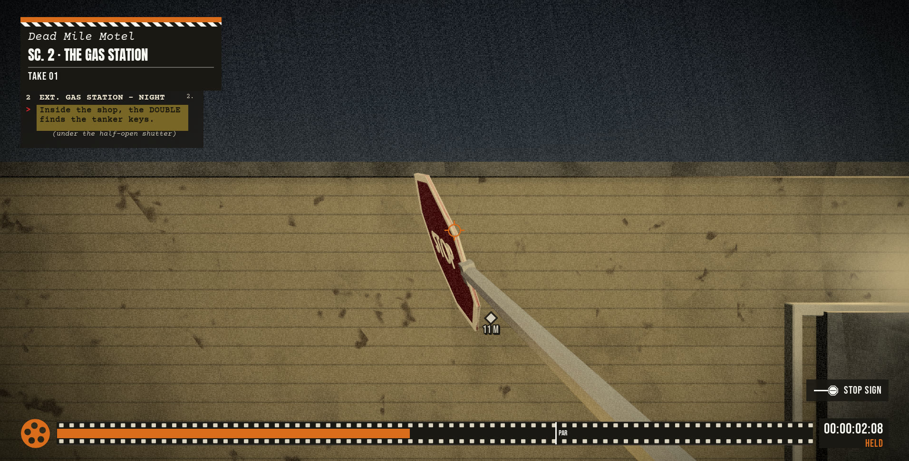
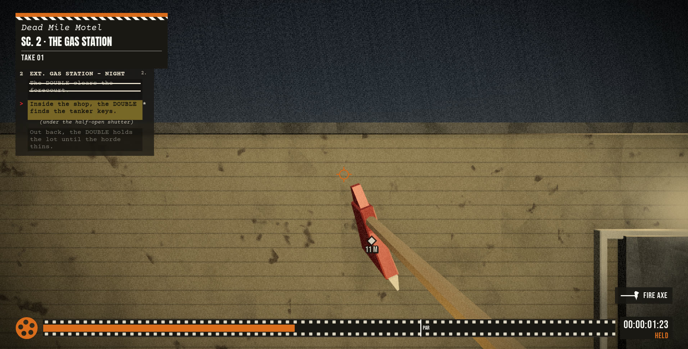
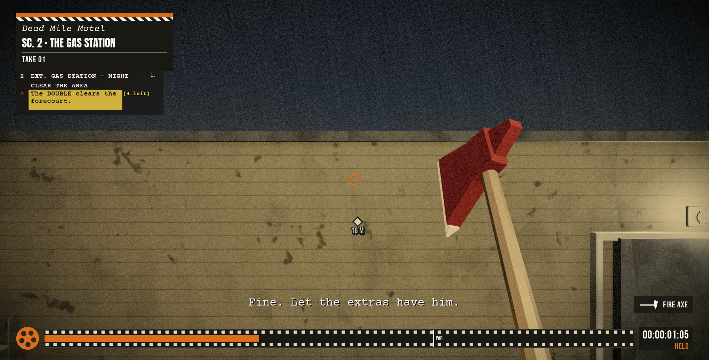
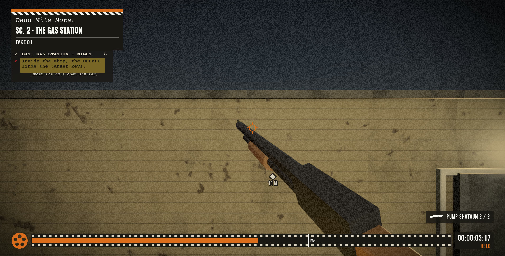
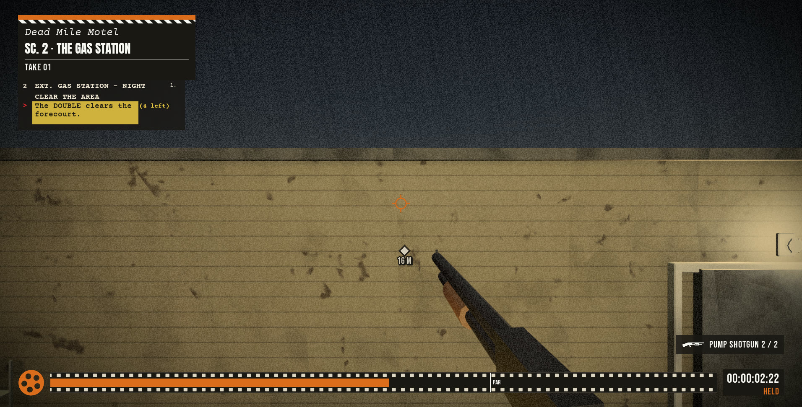

The stop sign was edge-on: nine held weapons, re-posed by arithmetic
I said the held weapons looked misaligned. The third Gameplay session photographed all nine against a blank wall, worked out each new pose from where it should sit on screen, and the engine photographed them again a few hours later.
Day 3, Sat 14 NovHour 59
Note 14 from this morning's playtest:
"First person poses for the held weapons (their rotation) can be a bit misaligned."
That was polite. Here is the stop sign, one of the melee weapons in the zombie levels, as I was holding it.

BeforeAfterPhotograph first
The third Gameplay session didn't start by changing numbers. At 10:56 it asked the engine for nine stills: stand four metres from a plain wall, look level, give the player each weapon in turn, take one picture each. Those were the "before" set, and the Director's art reviewer ranked them worst first: stop sign, shotgun, tommy gun, fire axe, ray gun, blaster. The revolver, machete and pool cue were fine.
The cause was dull. Most weapons had never been given a pose of their own. They were all using one default rotation from the code, tilted 10, 15 and 20 degrees, which happened to suit the machete and nothing else.


BeforeAfterThen do the sums
It didn't nudge angles until they looked right, because it can't see the screen without asking the engine and waiting for a filming block. So it wrote a small script, pose.py, that goes the other way: say where on screen the weapon should sit and where its tip should point, and get the rotation back. It checked the script against the machete still and matched it to within 0.01.
The rules it fed in: guns come up from the lower right with the barrel on a line through the crosshair ten metres out. Melee weapons rest low on the right with the tip toward the centre. Nothing covers the middle. The stop sign got its own ruling, logged as an assumption: carry it over the right shoulder with the plate half turned, because a plate facing me square-on would put the pole across the view.


BeforeAfterAfter the before-set review the guns were also lowered, so the grips leave the bottom of the screen. There are no hands on any weapon, and there isn't time to make any. Hiding where the hands would be is the fix.
What isn't on film yet
The same task added the sprint I asked for (hold Shift, about a third faster) and a field-of-view kick on sprints, slides and kills. They're in the build. The 14:45 reel that should show them doesn't: the sprint looks like the normal run, the slide never drops the camera, and in the kill clip nothing dies. The new poses haven't had their own review yet either. Both go round again in the next block.
Update, 16:00
The engine's reviewer has now been through the nine "after" stills: pass. Grips off screen, crosshair clear on every weapon, and the ray gun turned three-quarters so it no longer looks like a bowling pin. The sprint reel is being filmed again.